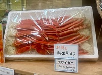

かに（蟹）の漁獲量 都道府県ランキング
全39県の順位と、とれた量
かにが日本でいちばん多くとれるのは北海道です。7,949 tで、全国（2万3,242 t）の34%を占めます。

| 順位 | 都道府県 | 漁獲量 | 全国に占める割合 |
|---|---|---|---|
| 1位 | 北海道 | 7,949 t | 34% |
| 2位 | 鳥取県 | 2,790 t | 12% |
| 3位 | 島根県 | 2,365 t | 10% |
| 4位 | 兵庫県 | 2,182 t | 9.4% |
| 5位 | 石川県 | 1,663 t | 7.2% |
| 6位 | 新潟県 | 1,622 t | 7.0% |
| 7位 | 秋田県 | 830 t | 3.6% |
| 8位 | 東京都 | 605 t | 2.6% |
| 9位 | 福井県 | 553 t | 2.4% |
| 10位 | 山形県 | 493 t | 2.1% |
| 11位 | 愛知県 | 401 t | 1.7% |
| 12位 | 青森県 | 363 t | 1.6% |
| 13位 | 宮城県 | 363 t | 1.6% |
| 14位 | 富山県 | 260 t | 1.1% |
| 15位 | 福岡県 | 142 t | 0.6% |
| 16位 | 岩手県 | 112 t | 0.5% |
| 17位 | 長崎県 | 76 t | 0.3% |
| 18位 | 愛媛県 | 67 t | 0.3% |
| 19位 | 熊本県 | 63 t | 0.3% |
| 20位 | 京都府 | 58 t | 0.2% |
| 21位 | 福島県 | 45 t | 0.2% |
| 22位 | 大分県 | 35 t | 0.2% |
| 23位 | 岡山県 | 30 t | 0.1% |
| 24位 | 山口県 | 27 t | 0.1% |
| 25位 | 三重県 | 24 t | 0.1% |
| 26位 | 香川県 | 23 t | 0.1% |
| 27位 | 静岡県 | 20 t | 0.1% |
| 28位 | 千葉県 | 18 t | 0.1% |
| 29位 | 沖縄県 | 12 t | 0.1% |
| 30位 | 広島県 | 10 t | 0.0% |
| 31位 | 佐賀県 | 9 t | 0.0% |
| 32位 | 大阪府 | 6 t | 0.0% |
| 33位 | 鹿児島県 | 6 t | 0.0% |
| 34位 | 宮崎県 | 5 t | 0.0% |
| 35位 | 茨城県 | 4 t | 0.0% |
| 36位 | 和歌山県 | 4 t | 0.0% |
| 37位 | 徳島県 | 4 t | 0.0% |
| 38位 | 神奈川県 | 2 t | 0.0% |
| 39位 | 高知県 | 2 t | 0.0% |
かにの漁獲量の推移（令和2年〜令和6年）
全国の漁獲量は、令和2年の2万580 tから令和6年の2万3,242 tへ、13%増えました。この間、1位はずっと北海道です。
| 年 | 全国 | 1位 | 2位 | 3位 |
|---|---|---|---|---|
| 令和6年 | 2万3,242 t | 北海道7,949 t | 鳥取県2,790 t | 島根県2,365 t |
| 令和5年 | 2万2,714 t | 北海道6,274 t | 鳥取県2,724 t | 島根県2,616 t |
| 令和4年 | 1万9,734 t | 北海道5,046 t | 鳥取県2,596 t | 兵庫県2,211 t |
| 令和3年 | 2万1,350 t | 北海道5,039 t | 鳥取県3,050 t | 兵庫県2,457 t |
| 令和2年 | 2万580 t | 北海道4,653 t | 鳥取県2,974 t | 兵庫県2,675 t |
この数字について
- 分類：蟹の仲間
- 全国の漁獲量：2万3,242 t
- この数字が表すもの：漁獲量（海でとった重さ。養殖は含みません）
- 調査：海面漁業生産統計調査（海面漁業） 令和6年
- 39県分を調査（調査していない県は順位に入りません）
かにの漁獲量について、よくある質問
- かにの漁獲量が日本一の都道府県はどこですか？
- 北海道です。海面漁業生産統計調査（海面漁業）（令和6年）で7,949 tでした。
- かにの漁獲量ランキング2位・3位はどこですか？
- 2位は鳥取県（2,790 t）、3位は島根県（2,365 t）です。
- かにの漁獲量ランキング4位・5位はどこですか？
- 4位は兵庫県（2,182 t）、5位は石川県（1,663 t）です。かにの全39県の順位は上の表のとおりです。
- かにの全国の漁獲量はどれくらいですか？
- 2万3,242 t（令和6年）です。